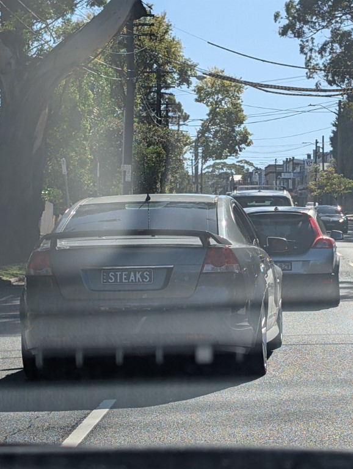
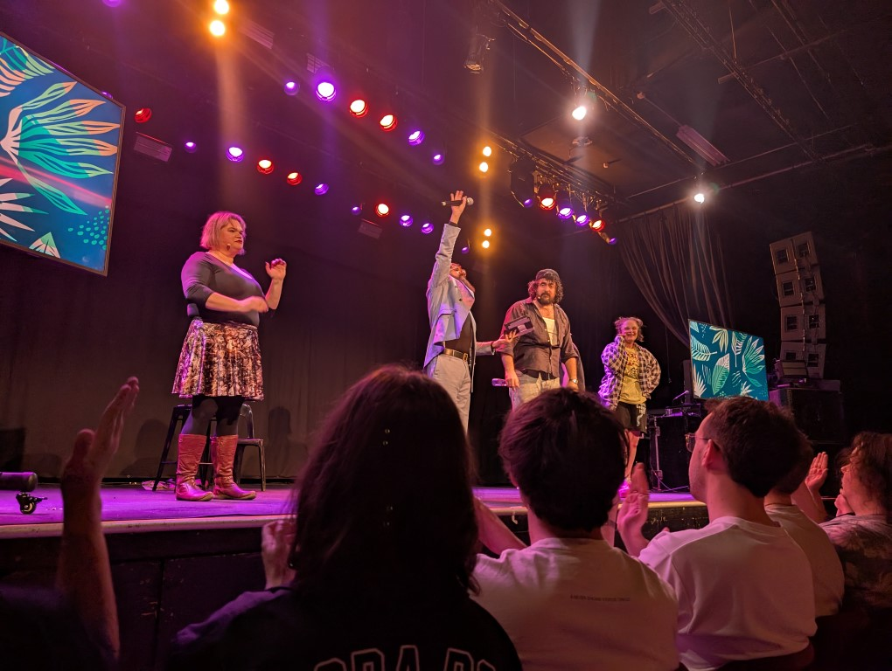

Hark!
Its April. I have lost my tiny little mind by going to melbourne twice as right now i am listening to the lord of the rings musical soundtrack (so fucking bad) while putting the finishing touches on my series of games for election day, hey thats coming up! And i cbf to early vote so i guess im gonna go find a polling place and then go for brunch at the squadron but THATS FOR MAY FORBIDDEN KNOWLEDGE NOW IS TO LOOK BACK ON APRIL
The enmore country club has sadly shutdown, sure its cocktails were mid and the AC was only in the main room which was always busy as sin but it was close to where i lived and thats a shame.
I had to sit in on a work webinar and the fucking ghal of teams to suggest my linkedin im furious. Also god the email that my boss picked for us to use on teams is fucking embarrasing, love to tell clients “oh yeah its .onmicrosoft.com” as if im a fucking corporate stooge of redmington gah i hate microsoft
Did i 3d print the speaker from severance as a distraction from packing for melbourne? Why of course i did
Saw the TinCan bros show which was wild because thats 3 starkid performers? Live? Infront of me? Wild.
The show also let you do in app purchases and this mother fucker spent real money on fake chuds to vote, which honestly was a funny bit.
Flew down to melbourne, and got some free food because i paid for baggage. THE LUXURY OF JETSTAR!!!!
Then for most of the month this is where i was staying - i will note this is when i arrived, it was a lot more disheveled as time went on
Also the mugs they had stunk so i went to David Jones to buy these lecruiste ones on sale and they are so good
Then while waiting for some food i saw Kieran Clarke in Melbournes CBD on i think russel street? For those who don't know who this man is, this is my friend declands older brother. Who now seemingly lives in melbourne? I didnt say hi to him as i was too in shock seeing someone that i knew from highschool (oh god that also reminds me that im like 70% sure i sat next to someone during greg larsons show that i went to school with but i couldnt be a creep and just openly stare at the person next to me, i was in home room with him but it will be impossible to figure out his name so alas)
Saw a late night show where comedians had to do ted talks against slides theyve never seen before and this one just tickled me
Finally as outlined below barely made it to bag drop to fly back to sydney
And then play dnd a few hours later
Had the dominos donut and boy howd eating this whole thing in one go after eating half a pizza made me feel like crap
A random client on a work meeting had the minecraft background and the giant frog rules but also the scale makes no sense! Microsft do better

Saw this car while driving and the plate is remarkable
Found out that bilbos fathers name in lotr is BUNGO???? Psycho shit, i thought this wouldve been a random name from the letters but this is in the fucking apendencies
Saw an easter bunny at ikea
Was the coolest guy on the plane playing games on my miyoo mini plus (this was on easter saturday and it was so quiet at the airport but melbourne ho again)
Had a royal stacks for the first time in ages and honestly, pretty good!
Went for a cocktail at this bar with the most black and gold ass iga sign
Flew back to sydney on easter monday reminded of the jesus 3 day thing or something idk it wasnt until a few years ago that i realised he actually came back and easter wasnt when he died
Found my old calculator for blue prince! This was a thing i found on the floor of i want to say my year 12 english classrooms floor, and it was there for weeks before declan and i just took it. The best part is that you type in a number and hit TAX+ and it just changes the number! What does it do to the number you ask? No clue! Its different every single time!
Saw the producers live! Loved it. Also saw it with davis who’d never seen it before so him getting to hear the name of the play they find was priceless
Went to ikea again (im not obsessed stfu, ill probs be going tomorrow as they have a new chair i want) with darling friend Mae who also stayed with me
This was at reverse garbage and hoesntly im kicking myself for not buying this hideous mousemat but also god am i glad i didnt buy that trash
Spent Anzac day morning wandering the beach

And the night watching the most upsetting guessing game go fucking nuts
Also we went to a book themed cocktail bar and i was so happy to have picked the drink in the menu that i thought would be served in the cool way and i was so right (the pina colada is inside a flask inside the book)
Saw this in Sydneys CBD and nothing has ever made me more certain that sydneys culture is irreplaceable, no other city would simply have a tooheys bar
Oh yeah also got this from reverse garbage for blue prince, it doesnt print perfectly but its fun now to be a little tax man looking at the receipt like “yes 10+3 does equal 13”
Went for dinner last night with my mum and brother at the Marickville Bowlo Club because my mum has been obsessed with the idea since we drove past it when i moved in. and boy howdy was that place stuck in the 70s. Food was fine but god it had weird vibes
I saw so many shows, see below for an collage. I could write up short thoughts for all of them and i might but right now i cbf so if theres one below i guess i got bored at work and wrote it.
(i went through an entire page of google results looking for a free photo collage maker but god damn that was annoying)
He gives off bad vibes, 7 parts in and idk i think he just spends multiple videos walking through the water and its weird? Idk he has bad vibes does anyone else get this or does any one know this might just be me. I think it also might be in one of the early eps he goes “yeah im gonna go through this hole” and it gave me such anxiety that i decided that i hated him. Also just wading through a river thats like wasit deep in a wet suit just gives me off vibes
Four lights in the bathroom??? It's 1:48 am I don't wanna start fiddling with those (I brushed my teeth in the dark) also opening the bathroom door to have their car meow at me and then walk in gave me a real scare (only becuase I'm sorta bad with cats?
Like I'm ok but growing up my grandmother (dead now) had a cat (also dead) that was a fucking cunt. It would lurk in the dark and hiss.
I never heard that fucker meow only hiss. Legitimately I would be afraid to go from one part of the house to the other becuase the car was sitting in the cathedral room on a chair and would hiss at me. Once my uncle walked me over becuase my mum was busy and he just hissed back at the cat and I was just so shocked that was something you could do??? Anyway I forgot what I was writing it's 2am I gotta sleep)
Ok so last year i saw Gillian Cosgroves show at sydney (it was at the old giant dwarf theatre and i think its now called the grand electric?) and a big part of that show was taht she went on holiday with friends and ended up getting everyones top 10 things and then having that in a book.
And i love that idea so much that i finally a year later have got a little book and am going to start getting peoples top 10s. Its not in order but its just 10 things that you would say are your top things. Now thing can mean absolutely anything and also i think i may have done this one some of you in the past but fuck it im gonna start going forwards and write it in my little book anyway be prepaired
My hubris knows no bounds. So i have flown 4 times this month (i know look at me mr big bridges flying to melbourne twice because he wanted to go see an extra show look the show was worth it, easter wasnt going to be much with my fam as my brother was being sent down south to help out his girlfriend not be destroyed by her family and my mum just wanted to watch the pitt so i have no guilt).
The first flight was at 11am on a thursday. I stupidly didnt clean my apartment the night before and was terrified they were going to do an inspection while i was gone (which wouldnt’ve happened as they need to give me 2 weeks notice and i was gone for 10 days logic really doesnt apply while your stressed) so i left with an eta of arriving at like 10am. Now the fun thing is jetstar close the bag drop 40 mins before your departure.
So i was like “oh ive got 20 mins thats fine!” then i get to the airport and holy shit the line was huge. And also! The fucking baggage conveyerbelts go down! So im stressing. I get to be the fucking 3rd next person and they call my flight, i panic and get out and go into the other line (which is just me jutting infront of some old people who shouldnt;ve been in that fucking line) and then notice i wouldve already gone if i had just waited but i just fucking made it.
Then flying back i was like “oh yeah ill leave with pleanty of time” nope the line to get a skybus ticket took 10 mins (i couldve bought on my phone but im an idiot) and then the skybus didnt leave for 15 mins so i arrived 3 mins before the cut off, sprinted in printed the bag tag, and then put my bag on the auto machine (because melbourne has the auto bag drops and there was 0 line) and saw it was at 21.9 kg and my heart sunk.
Jetstar limits you to 20kg. But i went fuck it “ill pay whatever they want” and then had to yank my bag off the conveyrbelt because i forgot to put the tag on it. Then off my bag went and they didnt even charge me for it! I think the machine rounded down to 21 kg and then that must be their margin of error so anyway what have i learnt from this?
Should i arrive early? No!
Hubris be damned the thrill of walking up to the terminal and having your flight already be boarding is electric. My mum drove me to the airport for the 2nd flight as she was worried about me missing it again and i had to spend an hour sat at the gate just playing advanced wars on my little console while listening to death becomes her on my ipod so what take away do i have from this?
I need to set my clocks to not the right time just to keep me on my toes
Anyway that was april, i was sick but anyway shout out to my friend who had her baby as well thats crazy i knew her in highschool and now she has a child anyway heres me being me https://www.youtube.com/shorts/EIfkgqcMbxw (i don't know why my gut reaction was to continue saying bitch but anyway)